How did the Black civil rights movement inspire other Americans to demand their own equality?
EXPANDING RIGHTS TIMELINE
1848
SENECA FALLS
Women's rights activists publicly demand equality and political rights.
1920
19TH AMENDMENT
Women win constitutional protection for voting rights, though access remains unequal.
1965
VOTING RIGHTS
The Black civil rights movement wins a major federal protection for voting.
1969
STONEWALL
LGBTQ resistance at Stonewall becomes a turning point for a broader movement.
1972
TITLE IX
Federal law expands equal opportunity in education and school athletics.
1990
ADA
Disability rights organizing helps win the Americans with Disabilities Act.
AFTER ONE MOVEMENT OPENED A DOOR
When thousands of people marched, sat in, boycotted, organized lawsuits, and demanded voting rights, they proved something powerful: ordinary people could force the country to face inequality. The Black civil rights movement did not solve every injustice, but it created a model that other Americans could study and adapt. Women, Native Americans, Chicanos, Asian Americans, disabled people, and LGBTQ Americans all asked a similar question: if equality is a national promise, why are we still excluded?
The Black civil rights movement showed that ordinary people could push the country to face unfairness. People marched, boycotted, sat in, went to court, and demanded voting rights. The movement did not fix every problem, but it gave other groups a model. Women, Native Americans, Chicanos, Asian Americans, disabled people, and LGBTQ Americans asked: if America promises equality, why are we still left out?
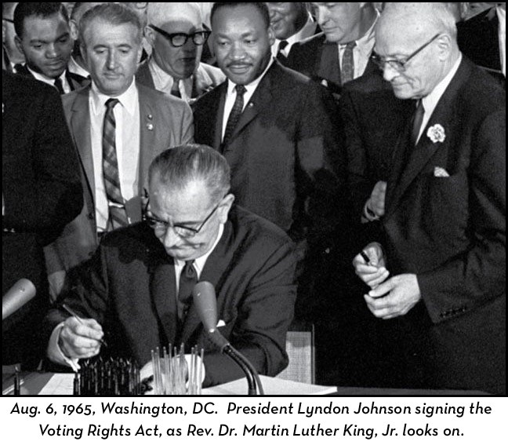
The Voting Rights Act of 1965 showed that protest, organizing, and federal law could combine to challenge unequal systems. Source: Wikimedia Commons or National Archives.
This lesson is not a list of separate movements. It is a story about connection. Different groups faced different histories and different barriers, but many borrowed tactics from one another: marches, court cases, national organizations, public testimony, occupations, strikes, and media attention. They also argued with one another over strategy, leadership, priorities, and who was being left out. That mix of cooperation and tension is called coalitionDifferent groups working together toward shared goals. politics.
This lesson is not just a list of movements. It is about connection. Different groups had different histories and problems, but many used similar tactics. They marched, went to court, formed organizations, gave public testimony, occupied spaces, and used media attention. They also disagreed over strategy and leadership. Coalition politics means different groups working together for shared goals.
THE BLACK CIVIL RIGHTS MOVEMENT BECOMES A MODEL
The Black civil rights movement gave later movements a practical example. Activists showed how to connect moral arguments, media images, grassroots organizing, court cases, and federal law. The Voting Rights ActA 1965 law that banned many racist barriers to voting. became a powerful example of how national pressure could change policy. Other groups saw that equality was not just an idea in the Constitution; it could become a demand made in streets, courts, schools, and Congress.
The Black civil rights movement gave later movements a useful example. Activists used moral arguments, media images, local organizing, court cases, and federal law. The Voting Rights Act was a strong example of national pressure changing policy. Other groups saw that equality was not just an idea. It could become a demand in streets, courts, schools, and Congress.
Selma marchers showed how public protest could force the nation to confront unequal voting rights. Source: Wikimedia Commons.
At the same time, the model was not simple. Some activists believed in nonviolence; others believed communities needed stronger self-defense or more radical change. Some groups wanted legal equality; others wanted economic change, cultural pride, land rights, or control over institutions. The civil rights era taught Americans that rights movements could win, but it also showed that equality meant more than one thing.
The model was not simple. Some activists believed in nonviolence. Others wanted stronger self-defense or more radical change. Some groups wanted legal equality. Others wanted economic change, cultural pride, land rights, or control over schools and local institutions. The civil rights era showed that rights movements could win, but equality meant different things to different people.
DID YOU KNOW
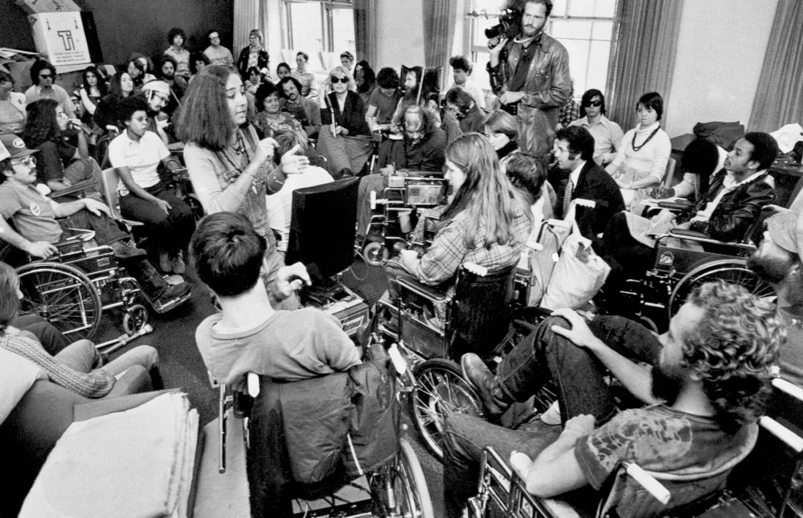
Section 504 sit-in activists, San Francisco, 1977. Source: Wikimedia Commons or disability rights archive.
The 1977 Section 504 sit-in lasted almost a month, making it one of the longest occupations of a federal building in U.S. history. Black Panthers and other community groups helped bring food and support, showing coalition politics in action.
WOMEN PUSH FROM VOTES TO EQUAL OPPORTUNITY
The feminist movementA movement demanding equal rights and opportunities for women. had roots long before the 1960s. At the Seneca Falls Convention in 1848, women and male allies publicly demanded political and social equality. The 19th Amendment in 1920 protected women's voting rights, though many women of color still faced racist barriers to voting. By the 1960s, activists argued that formal voting rights were not enough if women still faced discrimination in jobs, education, law, and family life.
The feminist movement began long before the 1960s. At the Seneca Falls Convention in 1848, women and male allies demanded political and social equality. In 1920, the 19th Amendment protected women's voting rights. Many women of color still faced racist barriers to voting. By the 1960s, activists said voting was not enough if women still faced unfair treatment in jobs, schools, law, and family life.
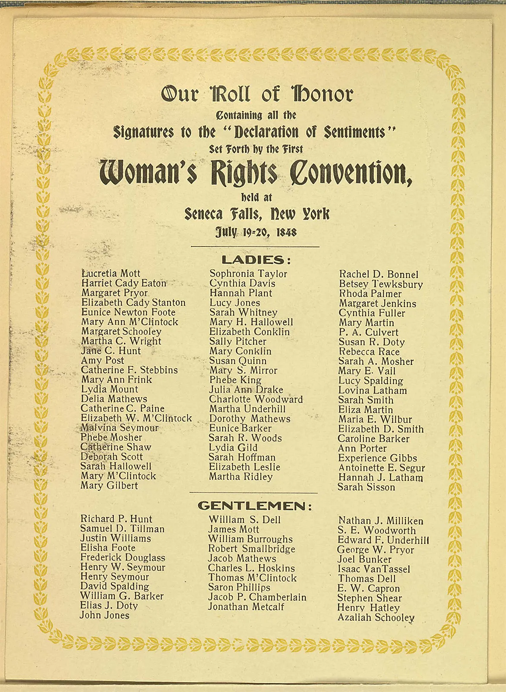
Seneca Falls connected women's rights to the language of American equality long before the 1960s. Source: Wikimedia Commons.
Betty Friedan's The Feminine Mystique, published in 1963, helped popularize a new wave of feminist activism by criticizing the idea that middle-class women should find complete fulfillment only as wives and mothers. In 1966, Friedan and others founded the National Organization for Women, or NOW, to push for equal employment, legal rights, and public policy changes. Activists supported the ERAThe Equal Rights Amendment, a proposed amendment to ban sex discrimination., but it failed to gain enough state ratifications. Supporters said it would guarantee equality; opponents argued it would disrupt family life, draft rules, and gender roles.
Betty Friedan's book The Feminine Mystique came out in 1963. It criticized the idea that middle-class women should be satisfied only as wives and mothers. In 1966, Friedan and others started the National Organization for Women, or NOW. NOW pushed for equal jobs, legal rights, and policy changes. Activists supported the ERA, or Equal Rights Amendment, but it did not get enough state support. Supporters said it would protect equality; opponents said it would change family life and gender roles.
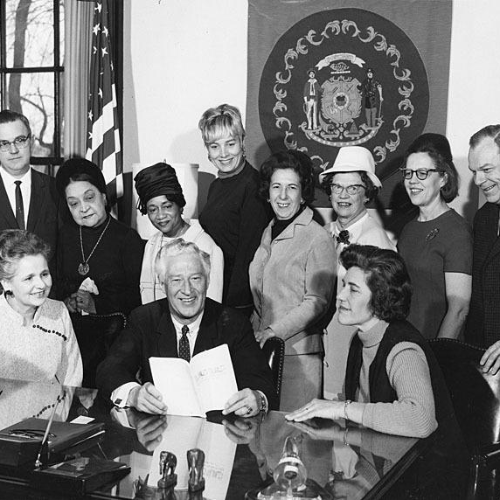
NOW turned feminist goals into a national organization focused on law, work, education, and public policy. Source: Wikimedia Commons.
Title IXA 1972 law banning sex discrimination in federally funded education programs. changed schools by banning sex discrimination in education programs that received federal money. It affected admissions, scholarships, classroom opportunities, and school athletics. Title IX did not instantly create equality, but it gave students and families a legal tool. It showed that the language of civil rights could reshape everyday institutions like schools.
Title IX changed schools. It is a 1972 law that bans sex discrimination in education programs that receive federal money. It affected admissions, scholarships, classes, and school sports. Title IX did not create equality right away, but it gave students and families a legal tool. It showed that civil rights laws could change everyday places like schools.
FAST FACTS
EXPANDING CIVIL RIGHTS ACROSS MOVEMENTS
1848Seneca Falls publicly connected women's rights to American democratic promises
1965the Voting Rights Act showed that federal law could attack unequal systems
1972Title IX banned sex discrimination in federally funded education programs
1978Bakke kept affirmative action alive but limited how race could be used in admissions
1990the ADA turned disability access into a major national civil rights requirement
COMMUNITIES ORGANIZE FOR THEIR OWN EQUALITY
Native activists built the American Indian Movement, or AIMA Native rights organization that fought for sovereignty, treaty rights, and justice., to challenge police abuse, poverty, broken treaties, and federal control over Native life. In 1973, AIM members and Oglala Lakota activists occupied Wounded Knee, South Dakota, a place already connected to the 1890 massacre of Lakota people. The occupation demanded attention to tribal sovereignty, treaty rights, and corruption. It showed that civil rights could also mean land, sovereignty, and respect for nations within the United States.
Native activists created the American Indian Movement, or AIM. AIM challenged police abuse, poverty, broken treaties, and federal control over Native life. In 1973, AIM members and Oglala Lakota activists occupied Wounded Knee, South Dakota. Wounded Knee was already connected to the 1890 massacre of Lakota people. The occupation demanded attention to tribal sovereignty, treaty rights, and corruption. It showed that civil rights could also mean land, sovereignty, and respect for Native nations.
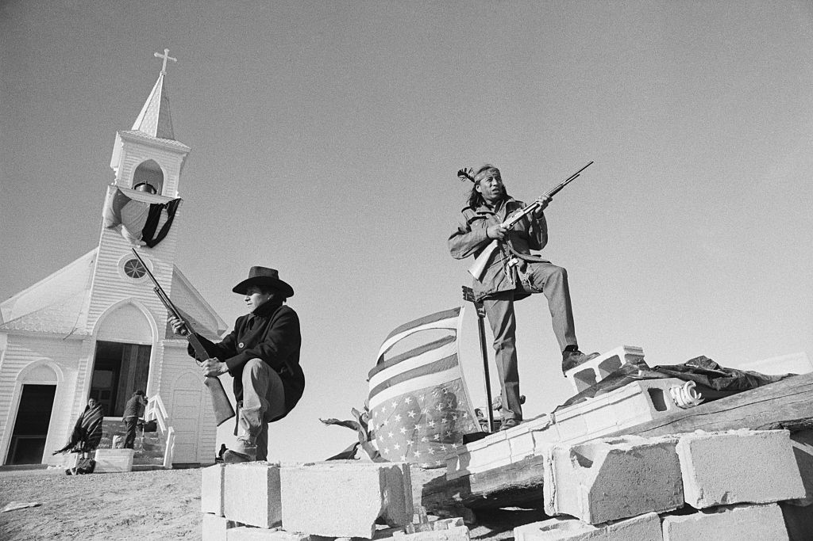
The occupation of Wounded Knee connected Native rights activism to sovereignty, treaties, and historical memory. Source: Wikimedia Commons.
The Chicano movement demanded equality for Mexican Americans and other Latino communities. Activists fought school segregation, labor exploitation, police discrimination, voting barriers, and cultural exclusion. Groups connected to La Raza Unida argued that Mexican Americans needed independent political power, not only promises from the two major parties. The movement used marches, student walkouts, farmworker organizing, newspapers, murals, and community schools to make identity and equality visible.
The Chicano movement fought for Mexican American and Latino equality. Activists challenged school segregation, unfair labor, police discrimination, voting barriers, and cultural exclusion. La Raza Unida argued that Mexican Americans needed their own political power, not just promises from the major parties. The movement used marches, student walkouts, farmworker organizing, newspapers, murals, and community schools.
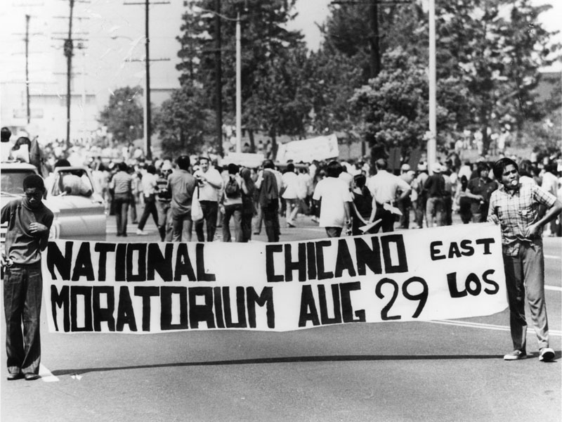
The Chicano Moratorium linked civil rights, antiwar protest, and Mexican American political power. Source: Wikimedia Commons or UCLA archive.
Asian American and Pacific Islander activists also built new coalitions. The term Asian American itself grew from organizing in the late 1960s, when activists wanted a political identity instead of separate labels imposed by outsiders. Japanese American activists fought for redress for World War II incarceration, arguing that the government had to admit wrongdoing and repair harm. In 1988, the Civil Liberties Act apologized and provided payments to surviving Japanese Americans who had been incarcerated.
Asian American and Pacific Islander activists also built coalitions. The term Asian American grew from organizing in the late 1960s. Activists wanted a political identity instead of labels created by outsiders. Japanese American activists fought for redress for World War II incarceration. Redress means trying to repair harm. In 1988, the Civil Liberties Act apologized and gave payments to surviving Japanese Americans who had been incarcerated.
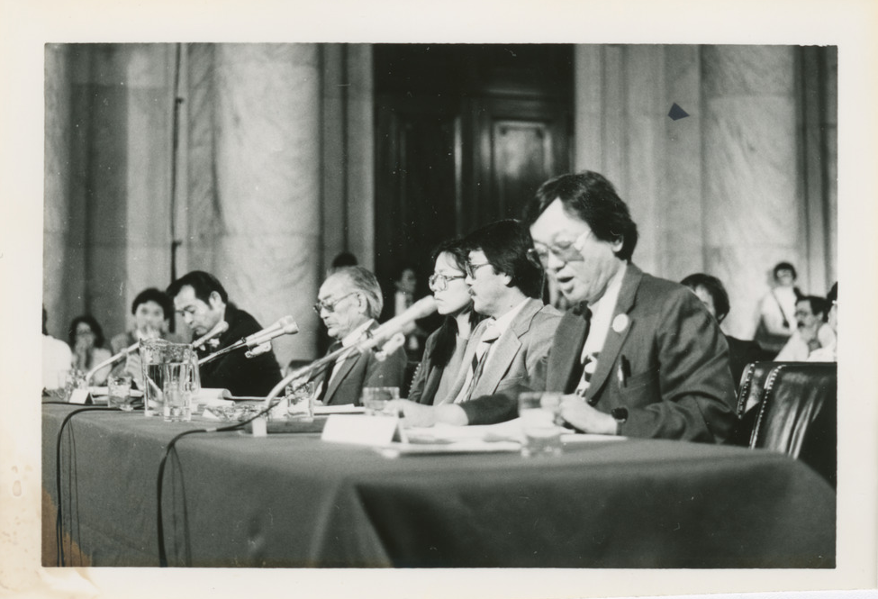
Japanese American redress activism demanded that the federal government acknowledge and repair the injustice of wartime incarceration. Source: National Archives or Wikimedia Commons.
ART SPOTLIGHT
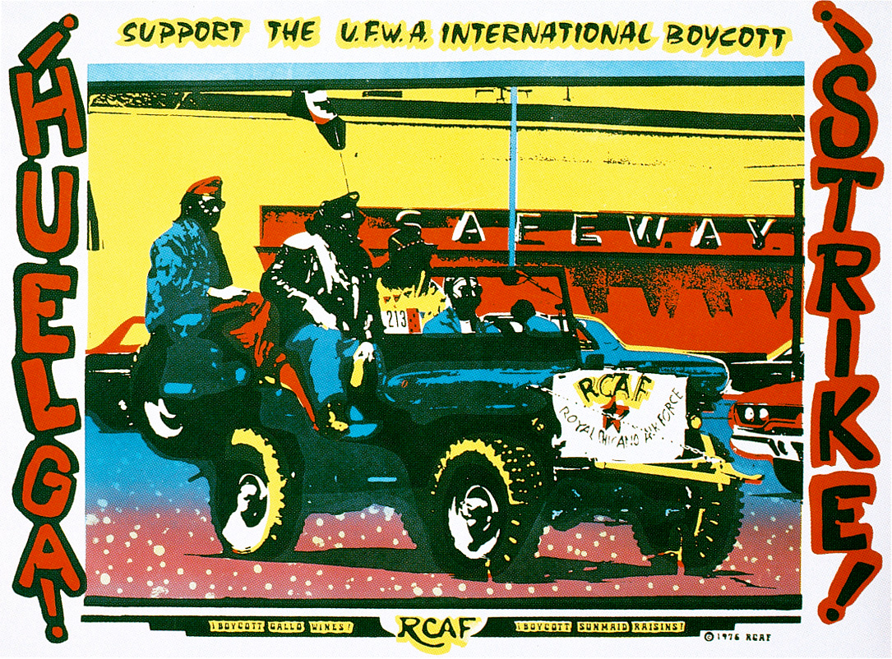
Royal Chicano Air Force poster : Chicano movement artists, 1970s.
Chicano artists used posters and murals to make political demands visible in neighborhoods, campuses, marches, and community spaces.
Movement art did more than decorate a cause. Posters could announce meetings, build pride, teach history, and turn a community's political goals into images people saw on walls before they saw them in textbooks.
DEBATES, TENSIONS, AND NEW DEFINITIONS OF EQUALITY
The LGBTQ rights movement grew through public resistance, organizing, and survival. The 1969 Stonewall uprising in New York City became a turning point because LGBTQ people fought back against police harassment. During the AIDS crisis of the 1980s, activists demanded medical research, public attention, and dignity for people who were being ignored or blamed. The movement showed that equal opportunityThe chance to participate fully without unfair barriers. also meant safety, health, family recognition, and freedom from criminalization.
The LGBTQ rights movement grew through resistance, organizing, and survival. The 1969 Stonewall uprising in New York City became a turning point because LGBTQ people fought back against police harassment. During the AIDS crisis of the 1980s, activists demanded medical research, attention, and dignity. Many people with AIDS were ignored or blamed. The movement showed that equal opportunity also meant safety, health, family recognition, and freedom from unfair laws.
Stonewall became a symbol of LGBTQ resistance to police harassment and public exclusion. Source: Wikimedia Commons.
The disability rights movement demanded access as a civil right. Activists argued that exclusion often came not from disability itself, but from buildings, schools, buses, workplaces, and laws designed without disabled people in mind. The Americans with Disabilities Act of 1990, or ADA, required major changes in public accommodations, employment, transportation, and communication. It changed the meaning of civil rights by making access part of equality.
The disability rights movement said access is a civil right. Activists argued that disabled people were often excluded because buildings, schools, buses, workplaces, and laws were not designed with them in mind. The Americans with Disabilities Act, or ADA, passed in 1990. It required changes in public places, jobs, transportation, and communication. It made access part of equality.
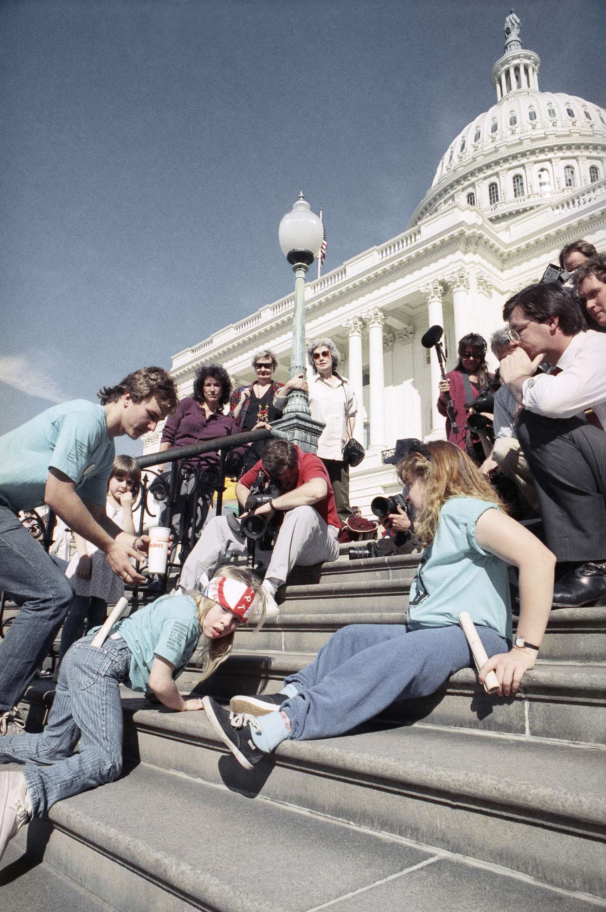
The Capitol Crawl dramatized how inaccessible public buildings excluded disabled Americans from civic life. Source: Wikimedia Commons.
Movements also disagreed over policies. In Regents v. Bakke in 1978, the Supreme Court considered affirmative actionPolicies meant to expand opportunities for groups facing discrimination. in university admissions. The Court rejected strict racial quotas but allowed race to be considered as one factor in creating educational diversity. The case showed a tension that continues in civil rights debates: should equality mean treating everyone the same now, or taking past and present discrimination into account?
Movements also disagreed about policy. In Regents v. Bakke in 1978, the Supreme Court considered affirmative action in college admissions. Affirmative action means policies meant to expand opportunities for groups facing discrimination. The Court rejected strict racial quotas but allowed race to be one factor in admissions. The case showed a continuing debate: does equality mean treating everyone the same now, or considering past and present discrimination?
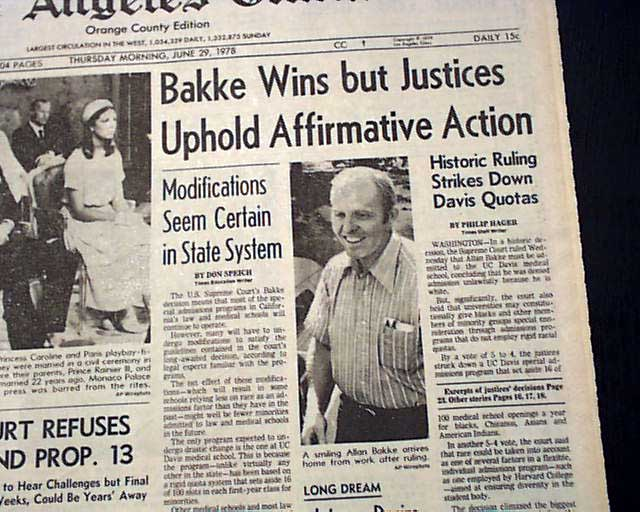
Regents v. Bakke became a major case in the national debate over affirmative action and equal opportunity. Source: Wikimedia Commons.
PRIMARY SOURCE MOMENT
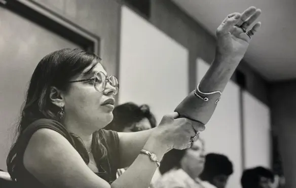
Judy Heumann and other disability rights activists during the Section 504 movement, 1977. Source: Wikimedia Commons or disability rights archive.
PRIMARY SOURCE
“It’s very difficult for us to sit here allowing discussions to go on which, in our opinion, really violate the intent of the law. Whether there was a Section 504, whether there was a Public Law 94-142, whether there was a Brown vs. Board of Education, the harassment, the lack of equities that has been provided for disabled individuals ... is so intolerable that I cannot put into words. We will no longer allow the government to oppress disabled individuals. We want the law enforced. We want no more segregation.”
Judy Heumann, remarks during the Section 504 disability rights sit-in, 1977.
Heumann connected disability rights to the same civil rights language used in earlier struggles against segregation. She argued that disabled people were not asking for sympathy; they were demanding enforcement of a law that promised equal access and equal treatment.
IN SIMPLE TERMS: Heumann is saying that disabled people were tired of waiting. They wanted the government to enforce civil rights protections and end segregation.
THEN AND NOW
CIVIL RIGHTS EXPANDED BECAUSE MORE PEOPLE CLAIMED THE PROMISE FOR THEMSELVES.
1970S
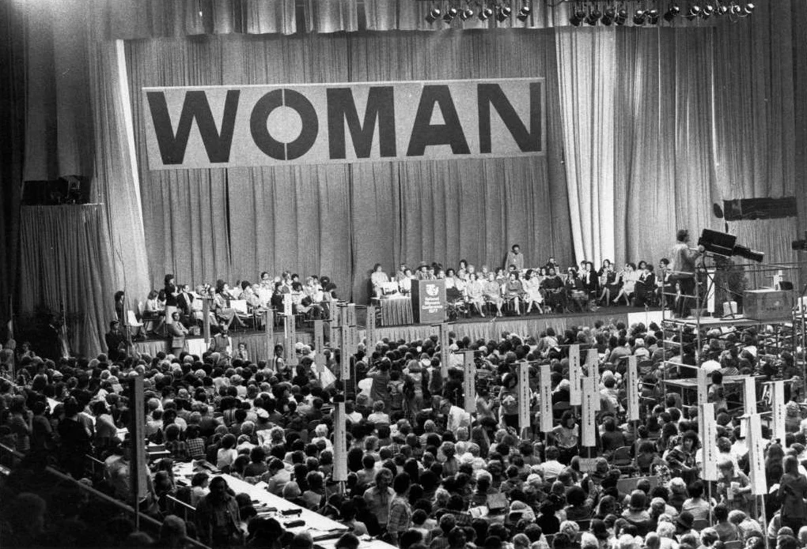
The 1977 National Women's Conference brought together activists debating equality, policy, and coalition politics. Source: Wikimedia Commons.
NOW
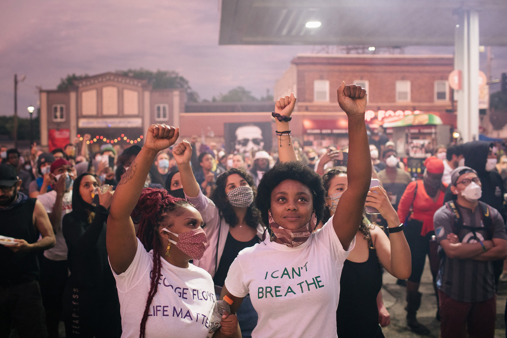
Modern movements often connect racial justice, gender equality, LGBTQ rights, disability access, immigrant rights, and other demands. Source: Wikimedia Commons or CC-licensed photograph.
THEN
In the 1960s and 1970s, activists increasingly saw civil rights as a shared language. Groups did not have identical goals, but many used organizing, public pressure, court cases, and federal policy to demand inclusion.
NOW
Today, many movements still work through coalitions. People organize around race, gender, sexuality, disability, immigration, religion, class, and other identities, often recognizing that people can belong to more than one community at the same time.
CONNECTION
The connection is that the Black civil rights movement helped show how excluded groups could turn American promises into public demands. Later movements expanded the meaning of equality by asking who was still outside the promise.
When different groups fight for equality together, what makes a coalition strong?